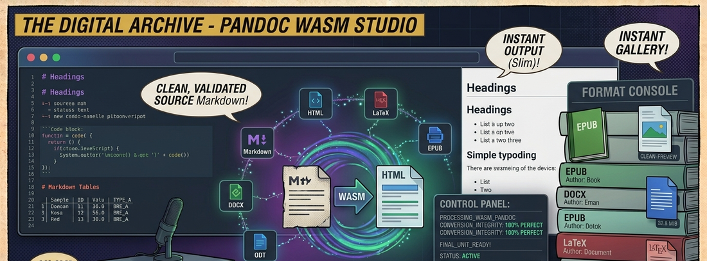

← Documenti & PDFPandoc WASM Studio
Convertitore di documenti universale che porta la potenza di Pandoc direttamente nel browser grazie a WebAssembly. Converti tra Markdown, HTML, LaTeX, EPUB, DOCX, ODT, reStructuredText, MediaWiki, Textile, Org-mode e molti altri — tutto localmente, zero upload, massima privacy.
📖 Cos'è
Pandoc WASM Studio è una web app moderna e completamente serverless che esegue Pandoc — il leggendario convertitore di documenti — direttamente nel browser tramite WebAssembly. Supporta una vasta gamma di formati di input e output: Markdown (standard e GitHub Flavored), HTML, LaTeX, EPUB, DOCX, ODT, reStructuredText, MediaWiki, Textile, Org-mode, JSON AST e Plain Text. L'intero processo di conversione avviene localmente sul dispositivo dell'utente grazie all'emulazione WASI (WebAssembly System Interface) tramite @bjorn3/browser_wasi_shim: i documenti non vengono mai caricati su alcun server. L'interfaccia offre drag-and-drop intelligente con rilevamento automatico del formato sorgente, un pulsante «Carica Esempio» per testare istantaneamente il motore WASM con vari scenari (tabelle, codice, formule LaTeX), e opzioni di esportazione rapida con copia negli appunti o download con estensione corretta.
👤 A chi serve
Pandoc WASM Studio è pensato per scrittori e autori tecnici che lavorano con documentazione in formati multipli e necessitano conversioni rapide senza installare tool. Sviluppatori che gestiscono README, CHANGELOG e documentazione di progetto in Markdown/HTML e vogliono esportare in formati pronti per la pubblicazione. Ricercatori e accademici che scrivono in LaTeX e devono condividere in DOCX, EPUB o HTML. Studenti che vogliono convertire appunti tra formati senza dipendere da servizi online. Chiunque abbia a cuore la privacy: conversioni 100% client-side, zero telemetria, zero caricamenti — ideale per documenti confidenziali, legali o aziendali. Perfetto per chi cerca un'alternativa gratuita, open source e offline ai convertitori online che richiedono upload.
⚙️ Come funziona
1. Caricamento: Trascina un file nell'area sorgente o usa il pulsante «Carica Esempio» per testare con documenti predefiniti (Markdown con tabelle, snippet di codice, formule LaTeX).
2. Rilevamento: L'app rileva automaticamente il formato del file sorgente in base all'estensione e al contenuto.
3. Conversione: Seleziona il formato di output desiderato e avvia la conversione. Pandoc WASM processa il documento localmente nel browser tramite WebAssembly + WASI shim — nessun dato lascia il dispositivo.
4. Output: Visualizza il risultato convertito in tempo reale nel pannello di anteprima. Copia l'output negli appunti o scarica il file con l'estensione corretta.
5. Engine Status: Una barra di stato in tempo reale mostra lo stato del motore WASM (caricamento, pronto, in conversione).
✨ Caratteristiche
- 100% Client-Side — Conversione locale via WebAssembly, nessun dato inviato a server
- 10+ formati supportati — Markdown, HTML, LaTeX, EPUB, DOCX, ODT, reStructuredText, MediaWiki, Textile, Org-mode, JSON AST
- Drag-and-Drop intelligente — Rilevamento automatico del formato sorgente dal file trascinato
- Carica Esempio in 1-Click — Testa il motore WASM con documenti predefiniti multi-formato
- Esportazione rapida — Copia negli appunti o scarica con estensione corretta in un click
- Design «Clean Utility» — Interfaccia moderna con animazioni Motion, tema ad alto contrasto
- Engine Status in tempo reale — Monitora il caricamento e lo stato del motore Pandoc WASM
- GitHub Flavored Markdown — Supporto completo a GFM con tabelle, task list, strikethrough
🔄 Conversioni Supportate
| Formato Sorgente | Formati di Output |
|---|---|
| Markdown / GFM | HTML, LaTeX, PDF (via LaTeX), EPUB, DOCX, ODT, reStructuredText, MediaWiki, Textile, Org-mode, Plain Text, JSON AST |
| HTML | Markdown, GFM, LaTeX, EPUB, DOCX, ODT, Plain Text, JSON AST |
| LaTeX | Markdown, HTML, EPUB, DOCX, ODT, Plain Text, JSON AST |
| EPUB | Markdown, HTML, LaTeX, DOCX, Plain Text, JSON AST |
| DOCX | Markdown, HTML, LaTeX, EPUB, ODT, Plain Text, JSON AST |
| reStructuredText | Markdown, HTML, LaTeX, EPUB, DOCX, Plain Text |
🏗️ Architettura
┌──────────────────────────────────────────────────────────────┐ │ Browser │ │ ┌──────────────┐ ┌────────────────┐ ┌──────────────────┐ │ │ │ Source Panel │ │ Format Picker │ │ Output Preview │ │ │ │ (Drag&Drop) │ │ (Auto-Detect) │ │ (Copy/Download) │ │ │ └──────┬───────┘ └───────┬────────┘ └────────┬─────────┘ │ │ │ │ │ │ │ ┌──────┴─────────────────┴─────────────────────┴─────────┐ │ │ │ App.tsx (React 19) │ │ │ └──────────────┬──────────────────────┬───────────────────┘ │ │ │ │ │ │ ┌──────────────▼──────────┐ ┌───────▼────────────────────┐ │ │ │ pandoc-wasm engine │ │ @bjorn3/browser_wasi_shim │ │ │ │ (WebAssembly binary) │ │ (WASI syscall emulation) │ │ │ └──────────────┬──────────┘ └───────┬────────────────────┘ │ │ │ │ │ │ ┌──────────────▼──────────────────────▼───────────────────┐ │ │ │ Pandoc WASM Runtime │ │ │ │ stdin → pandoc.wasm → stdout (tutto in-memory) │ │ │ └──────────────────────────────────────────────────────────┘ │ └──────────────────────────────────────────────────────────────┘
🔒 Privacy & Sicurezza
- Zero backend — Nessun server, nessun database, nessuna API esterna per la conversione
- Dati locali — I documenti caricati non lasciano mai il browser
- Nessun tracking — Zero analytics, zero telemetria
- Offline completo — Dopo il primo caricamento, funziona senza connessione internet